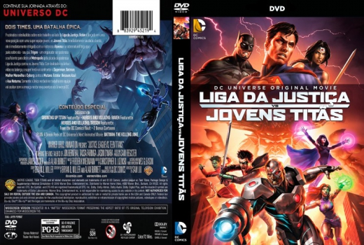

Outro Título:Justice League vs. Teen Titans
País:United States, 78 minutos
Idiomas falados:Espanhol, Inglês, Português
Gênero(s):Sci-Fi, Ação, Animação
Diretor(s):Sam Liu
Escritor(es):Alan Burnett, Bryan Q. Miller
Codec:MPEG-2 (DVD)
Número: 5787


Certificado:12
Sinopse:
Robin é forçado a trabalhar com os Jovens Titãs após comprometer uma missão da Liga da Justiça. Mas o vilão Trigon passa a controlar todos os membros da Liga, fazendo com que as duas equipes se enfrentem.
Elenco:


Tipo de mídia: DVD5,
Legendas: Espanhol, Inglês, Português, Sem Legendas
Alugado: Não
Tela: Anamorphic Widescreen